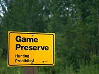
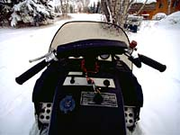

Habitat Requirements
Special Status
Forest Harvesting
Caribou and Us
Rangifer tarandus caribou (also known as "Woodland caribou")

Woodland caribou embody wilderness values. They have declined in number over most of their range. Three sub-species of caribou are found in Canada. Similar in appearance, each has its own survival tactics. Large herds of barren-ground caribou (shown left) migrate north to arctic calving grounds. Before giving birth, mountain caribou migrate to higher elevations. Bands of 15 to 25 woodland caribou remain in the forest year-round. They avoid predators by staying on the move through connected open meadows and muskegs. |
Woodland caribou travel the same routes year after year. They return to traditional winter ranges, mineral licks, and calving areas. At three years of age, a female caribou has her first calf. Single calves are born between mid-May and early June. |
 Bands of woodland caribou once lived as far south as Duck Mountain Provincial Park. Habitat loss and hunting have caused most woodland caribou populations to decline. In Saskatchewan, licensed hunting for woodland caribou was banned in 1987. |
Woodland caribou require large tracts of forest. Their instinct to avoid predators keeps them moving within and between seasonal habitats. In spring and summer, woodland caribou stay close to bogs and muskegs. Here they eat grasses and the leaves of shrubs. Hot summer days find woodland caribou in the shade of black spruce trees. A thick carpet of moss keeps these sites cool and relatively free of insects. |
Water sedge is an important food in early winter. The deep snows of late winter force woodland caribou out of lowland habitats. This causes a move to mature jackpine stands where caribou eat lichens -- a delicate plant that is high in energy. |

Because of their high death rate, woodland caribou are vulnerable. To prevent them from becoming threatened or endangered, they require special attention. In 1992, ten woodland caribou were captured, collared and released in northern Saskatchewan. Now wearing radio transmitters, these animals are being tracked by orbiting satellites. This study will pinpoint where caribou bands go in summer and winter. Forest managers will use these findings to protect habitat that is occupied by woodland caribou. |
Forest Harvesting and the Woodland Caribou

Woodland caribou can live beside large, evenedged cutovers. Large cutovers help to discourage the northern expansion of white-tailed deer. These deer attract more wolves to areas occupied by caribou. By discouraging deer from entering caribou range, wildlife experts predict that fewer caribou will fall prey to wolves. Whitetails can also spread a parasite that has killed woodland caribou in other parts of North America. |
Before logging in caribou range, forest companies will identify and protect caribou calving areas and travel routes. A third of the operating area will be left as mature and old-growth forest. Road access through woodland caribou habitat will be restricted. |
 Woodland caribou have not fared well. Snowmobiles, hunters on roads, and past logging activities are partly to blame. Changes to the forest landscape are another reason for their decline. Highways, bush roads, farms, and human settlements have fragmented large tracts of forested land. More deer, elk and timber wolves now roam former caribou range. Having lost the safety of wilderness, southern caribou are struggling to survive. |

In the northern commercial forest, the outlook for woodland caribou is much brighter. Partners in the Saskatchewan Forest Habitat Project have agreed to set aside large areas of old-growth coniferous forest. This action will conserve habitat for woodland caribou and other wildlife that shares its range. |